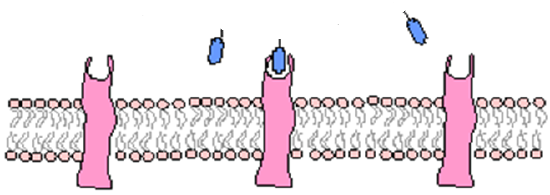
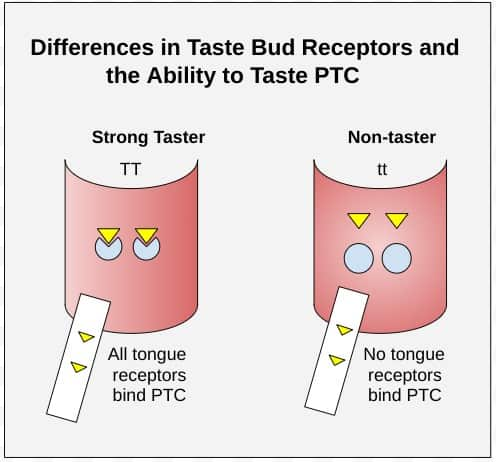

01 / The compound
What is PTC?
💡 At a glance
PTC is a bitter-tasting chemical used to test a genetic trait. About 7 in 10 people taste it as very bitter — the rest barely taste it at all.
A compound with two reactions
PTC stands for phenylthiocarbamide, a small synthetic compound that has nothing to do with food — you will not find it in your kitchen. It matters to biologists because about seven out of ten people find it shockingly bitter, while the rest taste almost nothing.
An accidental discovery
The compound was discovered by accident in 1931. Chemist Arthur Fox was transferring PTC powder when some drifted into the air. A colleague complained about the bitter taste — but Fox tasted nothing. Their follow-up tests revealed the same split: some people tasted it strongly, some barely tasted it.
Lab connection
The PTC paper strips used in class carry a small, harmless dose of this compound. Whether it tastes bitter comes down to which version of one gene you inherited.
02 / The instruction
The gene: TAS2R38
🧬 At a glance
One gene, TAS2R38, controls this trait. It comes in different versions, called haplotypes, that build slightly different-shaped receptor proteins.
Where the gene lives
The gene responsible sits on chromosome 7. It codes for a bitter-taste receptor protein on the outer membrane of certain taste bud cells, waiting for bitter compounds to bind.
Two common versions
Everyone has two copies, one from each parent. The common haplotypes differ at three spots in the DNA sequence, changing three amino acids in the resulting protein.
| Haplotype | Amino acids at 3 key positions | Functional version |
|---|---|---|
| PAV | Pro · Ala · Val | Functional |
| AVI | Ala · Val · Ile | Altered / less responsive |
03 / The sensor
How the receptor works
🔑 At a glance
The receptor’s shape decides whether PTC can dock onto it and send a “bitter” signal — through a nerve — to the brain.
The chain reaction
- Gene → TAS2R38 provides instructions for the receptor protein.
- Protein → the receptor is built and placed on a taste bud cell.
- Binding → PTC dissolves in saliva and, if the pocket fits, locks into it.
- Cell response → the taste cell fires a signal.
- Nervous system → a nerve carries that signal to the brain.
- Trait → the brain reads a strong signal as intense bitterness.
Why shape matters
The functional PAV receptor grips PTC tightly, producing a strong signal. The AVI receptor has a slightly different shape, so PTC binds weakly or not at all. The same molecule meets two differently shaped locks.
04 / The outcome
From genotype to phenotype
🧩 At a glance
One functional gene copy is enough to taste PTC strongly. It takes two non-functional copies to miss the bitterness almost entirely.
Three possible genotypes
The functional PAV version is dominant; the altered AVI version is recessive. Only one working copy is needed to taste PTC strongly.
| Genotype | Copies inherited | Typical phenotype |
|---|---|---|
| PAV / PAV | two functional copies | strong taster |
| PAV / AVI | one of each | taster; functional copy dominates |
| AVI / AVI | two altered copies | non-taster |
Not a perfect on/off switch
People report a range of bitterness, not just “yes” or “no,” and rarer haplotypes exist. “Non-taster” does not mean someone has a weaker sense of taste overall — it describes this one receptor and this one family of compounds.
05 / The bigger question
Why this trait exists
🌱 At a glance
Bitter taste helped early humans avoid harmful plants. This gene may be a leftover piece of that survival system.
A built-in warning system
Many toxic or harmful plant compounds taste bitter. The compounds PTC resembles show up naturally in vegetables like broccoli, cabbage, and Brussels sprouts, all in the same plant family.
Genes, food, and evolution
Researchers have studied links between TAS2R38 genotype and vegetable preferences. But genetics is only one factor alongside upbringing, culture, and repeated exposure. Both gene versions have remained in human populations, suggesting each may offer advantages in different environments.
Quick reference
Glossary
- PTC
- Phenylthiocarbamide — the compound used to test bitter-taste sensitivity.
- TAS2R38
- The gene on chromosome 7 that codes for the PTC bitter-taste receptor.
- Haplotype
- A specific combination of nearby genetic differences inherited together.
- PAV / AVI
- Common functional and altered versions of TAS2R38.
- Genotype
- The specific pair of gene versions an individual carries.
- Phenotype
- The observable trait that results from a genotype.
- Dominant allele
- A gene version whose effect shows up with only one copy.
- Recessive allele
- A gene version whose effect shows up when both copies match.
- Receptor protein
- A protein on a cell surface that binds to a molecule and triggers a response.
Visual lab plates
See the difference
Where TAS2R38 lives
How the receptor changes
How a receptor detects a molecule

Strong taster and non-taster

Student support
Make the big idea smaller
Use this page one piece at a time. You do not need to memorize every word. Start with the picture, say the short version, then check what you remember.
The whole story in four steps
Say it this way: DNA gives instructions for a receptor. The receptor detects PTC. A nerve carries the message to the brain.
Three words to know
- Gene: DNA instructions.
- Receptor: a protein that detects a signal.
- Phenotype: the trait you can observe.
Memory clue: genotype is what you carry; phenotype is what you show.
Quick self-check
Which part carries the taste message from the taste cell to the brain?
Correct. The receptor detects PTC, and a nerve carries that signal to the brain.
Almost. Look at the four-step pathway above: receptor → nerve → brain.